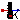
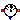

Extends from Modelica.Icons.Library2 (Icon for library where additional icon elements shall be added).
| Name | Description |
|---|---|
|  TemperatureSensor | Absolute temperature sensor in Kelvin |
| Relative Temperature sensor | |
|  HeatFlowSensor | Heat flow rate sensor |
This is an ideal absolute temperature sensor which returns the temperature of the connected port in Kelvin as an output signal. The sensor itself has no thermal interaction with whatever it is connected to. Furthermore, no thermocouple-like lags are associated with this sensor model.
| Name | Description |
|---|---|
| T | |
| port |
 Modelica.Thermal.HeatTransfer.Sensors.RelTemperatureSensor
Modelica.Thermal.HeatTransfer.Sensors.RelTemperatureSensor
The relative temperature "port_a.T - port_b.T" is determined between the two ports of this component and is provided as output signal in Kelvin.
Extends from Modelica.Icons.TranslationalSensor (Icon representing translational measurement device).
| Name | Description |
|---|---|
| port_a | |
| port_b | |
| T_rel |
 Modelica.Thermal.HeatTransfer.Sensors.HeatFlowSensor
Modelica.Thermal.HeatTransfer.Sensors.HeatFlowSensor
This model is capable of monitoring the heat flow rate flowing through this component. The sensed value of heat flow rate is the amount that passes through this sensor while keeping the temperature drop across the sensor zero. This is an ideal model so it does not absorb any energy and it has no direct effect on the thermal response of a system it is included in. The output signal is positive, if the heat flows from port_a to port_b.
Extends from Modelica.Icons.RotationalSensor (Icon representing rotational measurement device).
| Name | Description |
|---|---|
| Q_flow | Heat flow from port_a to port_b |
| port_a | |
| port_b |